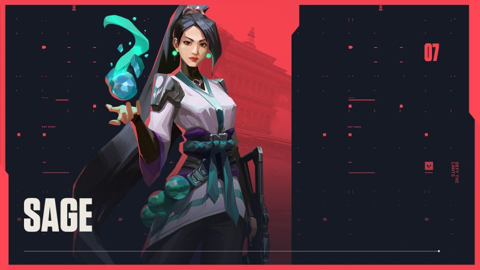
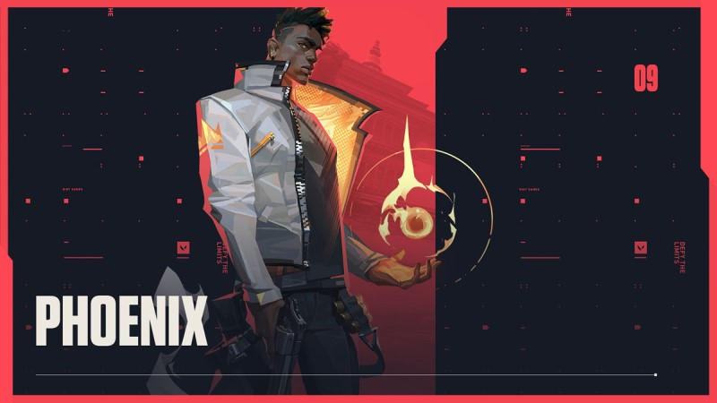
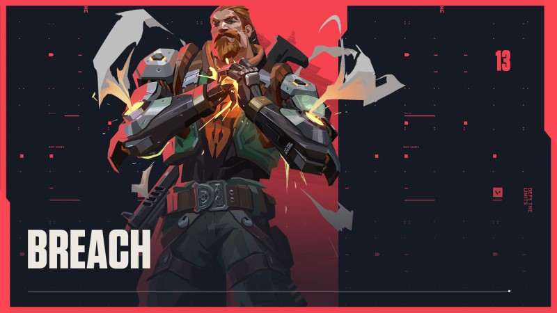
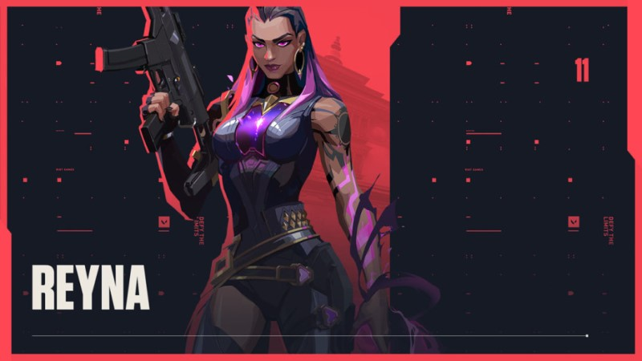

The most prominent support character to date hails from China and brings orbs that heal allies, slow enemies, and create barriers out of the ground to impede the flow of a match. Her ultimate ability allows her to resurrect a fallen ally, which is significant in a game with no respawns.

The fiery Brit can wield the power of flame to essentially reshape the battlefield into how he sees fit. With exploding fireballs that damage enemies and heal him, a vision-blocking wall of fire, and a blinding fire burst, Phoenix is great at manipulating the flow of the match. His ultimate grants him the ability to be reborn if he's killed during its duration, galvanizing him to make bold moves he wouldn't otherwise make.

Breach's main gimmick is the ability to use all of his abilities through the geometry of the map,whether it is through walls, roofs, or terrain. This ability set rewards experienced players for knowing the maps well. His abilities also seem to reward an aggressive playstyle despite most of his abilities being crowd-control based.

Forged in the heart of Mexico, Reyna dominates single combat, popping off with each kill she scores. Her capability is only limited by her raw skill, making her highly dependent on performance. Reyna has the passive ability of Soul Harvest, enemies killed by Reyna leave behind Soul Orbs that last 3 seconds. Soul Harvest abilities consist of Devour and Dismiss which have a shared usage pool.

A predator that deals in poison and chemical warfare. She has exploding projectiles that spill acid on the battlefield, as well as a poison-gas emitter, and a toxic gas screen to prevent passage. Her ultimate emits a toxic cloud that conceals her location and can highlight enemies who wander into it.